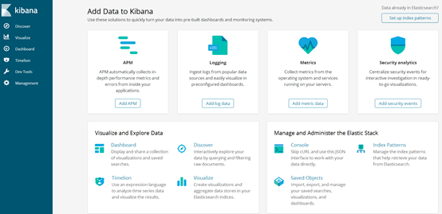
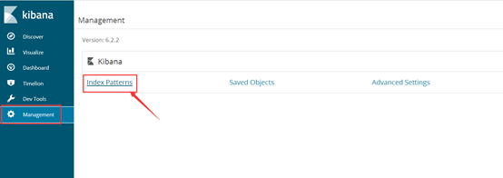
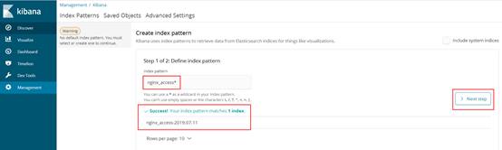
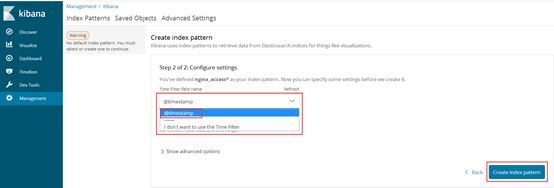
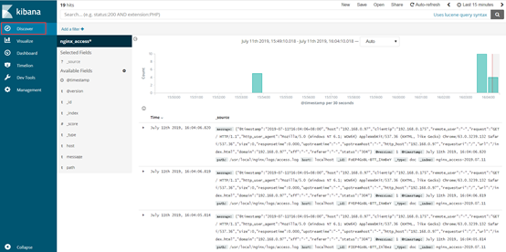

ELK单机日志系统搭建
介绍
- 背景
日志主要包括系统日志、应用程序日志和安全日志。系统运维和开发人员可以通过日志了解服务器软硬件信息、检查配置过程中的错误及错误发生的原因。经常分析日志可以了解服务器的负荷，性能安全性，从而及时采取措施纠正错误。
通常，日志被分散的储存不同的设备上。如果你管理数十上百台服务器，你还在使用依次登录每台机器的传统方法查阅日志。这样是不是感觉很繁琐和效率低下。当务之急我们使用集中化的日志管理，例如：开源的syslog，将所有服务器上的日志收集汇总。
集中化管理日志后，日志的统计和检索又成为一件比较麻烦的事情，一般我们使用grep、awk和wc等Linux命令能实现检索和统计，但是对于要求更高的查询、排序和统计等要求和庞大的机器数量依然使用这样的方法难免有点力不从心。
开源实时日志分析ELK平台能够完美的解决我们上述的问题，ELK由ElasticSearch、Logstash和Kiabana三个开源工具组成。官方网站：https://www.elastic.co/products
ELK Stack 是软件集合 Elasticsearch、Logstash、Kibana 的简称，由这三个软件及其相关的组件可以打造大规模日志实时处理系统。
Elasticsearch 是一个基于 Lucene 的、支持全文索引的分布式存储和索引引擎，主要负责将日志索引并存储起来，方便业务方检索查询。
Logstash 是一个日志收集、过滤、转发的中间件，主要负责将各条业务线的各类日志统一收集、过滤后，转发给 Elasticsearch 进行下一步处理。
Kibana 是一个可视化工具，主要负责查询 Elasticsearch 的数据并以可视化的方式展现给业务方，比如各类饼图、直方图、区域图等。
filebeat 是一个日志收集工具，从单机日志收集后发送到Logstash，或者直接写入ES中。
所谓“大规模”，指的是 ELK Stack 组成的系统以一种水平扩展的方式支持每天收集、过滤、索引和存储 TB 规模以上的各类日志。
- 特点
一个完整的集中式日志系统，需要包含以下几个主要特点：
1）收集－能够采集多种来源的日志数据
2）传输－能够稳定的把日志数据传输到中央系统
3）存储－如何存储日志数据
4）分析－可以支持 UI 分析
5）警告－能够提供错误报告，监控机制
而ELK则提供了一整套解决方案，并且都是开源软件，之间互相配合使用，完美衔接，高效的满足了很多场合的应用。是目前主流的一种日志系统。
- 架构
上图是 ELK Stack 实际应用中典型的一种架构，其中 filebeat 在具体的业务机器上，通过实时的方式获取增量的日志，并转发到 Kafka 消息系统暂存。
Kafka 以高吞吐量的特征，作为一个消息系统的角色，接收从 filebeat 收集转发过来的日志，通常以集群的形式提供服务。
然后，Logstash 从 Kafka 中获取日志，并通过 Input-Filter-Output 三个阶段的处理，更改或过滤日志，最终输出我们感兴趣的数据。通常，根据 Kafka 集群上分区(Partition)的数量，1:1 确定 Logstash 实例的数量，组成 Consumer Group 进行日志消费。
最后，Elasticsearch 存储并索引 Logstash 转发过来的数据，并通过 Kibana 查询和可视化展示，达到实时分析日志的目的。
Elasticsearch/Kibana 还可以通过安装 x-pack 插件实现扩展功能，比如监控 Elasticsearch 集群状态、数据访问授权等。
示意图如下：

案例介绍
在一台服务器上安装nginx，保持默认配置，通过访问nginx来产生日志信息，然后用filebeat进行收集，传输到ElasticSearch，再到kibana里面进行日志展示。
前置准备
- 安装方式
单机安装
- 安装版本
elasticsearch-6.2.2.tar.gz
kibana-6.2.2-linux-x86_64.tar.gz
logstash-6.2.2.tar.gz
filebeat-6.2.2-linux-x86_64.tar.gz
注意：以6.2.2版本进行验证，后续会选择切换到ELK 7版本的相关安装包。
环境要求
操作系统
CentOS 7.6Java环境
JDK-1.8.0_202版本，已安装配置。IP地址
192.168.188.174 ELK部署机器
192.168.188.176 Nginx、filebeat部署机器
占用端口
elasticsearch：9200、9300
kibana：5601
logstash：5044
其它
操作用户为centos，需要使用sudo开启root权限。
基础环境配置
关闭防火墙（可不进行，开放相关端口即可）
// 关闭防火墙，防止重启 $ sudo systemctl stop firewalld $ sudo systemctl disable firewalld // 关闭selinux $ setenforce 0 $ sed -i '/SELINUX/s/enforcing/disabled/' /etc/selinux/config内核优化
$ sudo vim /etc/security/limits.conf // 在文件最后添加以下内容 * soft nofile 65537 * hard nofile 65537 * soft nproc 65537 * hard nproc 65537 // 查看文档内容是否已经修改 $ egrep -v "^$|#" /etc/security/limits.conf // 注意：修改了/etc/security/limits.conf ，必须要重启，才能生效。也可以在最后配置完成后进行重启。 // $ sudo vim /etc/security/limits.d/20-nproc.conf // 修改以下内容，已有则修改，没有则需要添加 * soft nproc 4096 $ sudo vim /etc/sysctl.conf // #添加以下内容 vm.max_map_count = 262144 net.core.somaxconn=65535 net.ipv4.ip_forward = 1 // 执行sysctl -p使其生效 $ sudo sysctl -pJDK安装–参考Linux日常运维操作
ElasticSearch的安装配置
首先登陆192.168.188.174服务器进行操作。
// 0、开放相关端口
$ sudo firewall-cmd --permanent --zone=public --add-port=5044/tcp
$ sudo firewall-cmd --permanent --zone=public --add-port=9200/tcp
$ sudo firewall-cmd --permanent --zone=public --add-port=9300/tcp
$ sudo firewall-cmd --permanent --zone=public --add-port=5601/tcp
// 1、创建持久化目录及logs目录
$ mkdir -p /home/centos/elasticsearch/{data,logs}
// 2、下载elasticsearch软件包
$ wget https://artifacts.elastic.co/downloads/elasticsearch/elasticsearch-6.2.2.tar.gz
// 3、解压并重命名
$ tar zxf elasticsearch-6.2.2.tar.gz
$ sudo mv elasticsearch-6.2.2 /usr/local/elasticsearch
// 4、修改elasticsearch.yml配置文件，文件内容如下
$ sudo vim /usr/local/elasticsearch/config/elasticsearch.yml
node.name: localhost
path.data: /home/centos/elasticsearch/data
path.logs: /home/centos/elasticsearch/logs
network.host: 0.0.0.0
http.port: 9200
// 5、创建elk用户并授权
// (这条命令可以不执行)
$ sudo chown -R centos.centos /home/centos/elasticsearch/*
$ sudo chown -R centos.centos /usr/local/elasticsearch
// 6、启动es服务（第一次先测试好在加-d后台启动）
$ /usr/local/elasticsearch/bin/elasticsearch
// 7、后台启动es服务
$ nohup /usr/local/elasticsearch/bin/elasticsearch -d &Elasticsearch常用命令
curl -XDELETE 'http://host.IP.address:9200/logstash-*' 删除索引(后面为索引名称)
curl -XGET 'host.IP.address:9200/_cat/health?v&pretty' 查看集群状态
curl -XGET 'host.IP.address:9200/_cat/indices?v&pretty' 查看索引Elasticsearch安装X-Pack插件（后续补充）
kibana的安装配置
// 1、下载Kibana软件包
$ wget https://artifacts.elastic.co/downloads/kibana/kibana-6.2.2-linux-x86_64.tar.gz
// 2、解压并重命名
$ tar zxf kibana-6.2.2-linux-x86_64.tar.gz
$ sudo mv kibana-6.2.2-linux-x86_64 /usr/local/kibana
$ sudo chown -R centos.centos /usr/local/kibana
// 3、编辑kibana.yml配置文件
$ sudo vim /usr/local/kibana/config/kibana.yml
server.port: 5601
server.host: "192.168.0.97"
elasticsearch.url: "http://192.168.0.97:9200"
// 4、启动Kibana服务（采用后台启动）
//#前台启动
$ /usr/local/kibana/bin/kibana
// 检查运行情况
// #后台启动
$ nohup /usr/local/kibana/bin/kibana &
// 温馨提示：可以先前台启动查看日志，正常之后在后台启动。安装完成后，可以在浏览器访问http://192.168.188.174:5601/，打开kibana页面。
Nginx的安装配置
由于192.168.188.176服务器上已经安装了nginx，因此不在赘述。具体安装详细见参考地址
主要是针对nginx进行配置，请登录192.168.188.176服务器，操作如下：
// 打开nginx所在目录
$ cd /usr/local/nginx
// 编辑配置文件
$ sudo vim ./conf/nginx.conf
// 在http { 下边添加
log_format main '{"@timestamp":"$time_iso8601",'
'"host":"$server_addr",'
'"clientip":"$remote_addr",'
'"remote_user":"$remote_user",'
'"request":"$request",'
'"http_user_agent":"$http_user_agent",'
'"size":$body_bytes_sent,'
'"responsetime":$request_time,'
'"upstreamtime":"$upstream_response_time",'
'"upstreamhost":"$upstream_addr",'
'"http_host":"$host",'
'"requesturi":"$request_uri",'
'"url":"$uri",'
'"domain":"$host",'
'"xff":"$http_x_forwarded_for",'
'"referer":"$http_referer",'
'"status":"$status"}';
access_log logs/access.log main;
// :wq 进行保存
// 重新reload
$ sudo ./sbin/nginx -s reload访问http://192.168.188.176 查看日志信息，这时候可以在/usr/local/nginx/logs目录下看到access.log日志了。真正对其收集的配置，可以参考filebeat安装的内容。
filebeat安装配置
继续在176服务器上进行操作，如下：
// 1、下载软件包
$ wget https://artifacts.elastic.co/downloads/beats/filebeat/filebeat-6.2.2-linux-x86_64.tar.gz
// 2、解压并重命名
$ tar -zxvf filebeat-6.2.2-linux-x86_64.tar.gz
$ sudo mv filebeat-6.2.2-linux-x86_64 /usr/local/filebeat
// 3、编辑logstash.yml配置文件，添加以下内容
$ sudo vim /usr/local/filebeat/filebeat.yml
# 开启日志模式
- type: log
# Change to true to enable this prospector configuration.
enabled: true
# Paths that should be crawled and fetched. Glob based paths.
paths:
#- /var/log/*.log
# 添加日志路径信息
- /usr/local/nginx/logs/*.log
。。。。。。
### Multiline options
# Mutiline can be used for log messages spanning multiple lines. This is common
# for Java Stack Traces or C-Line Continuation
# The regexp Pattern that has to be matched. The example pattern matches all lines starting #with [
# 配置匹配模式
multiline.pattern: ^\[
# Defines if the pattern set under pattern should be negated or not. Default is false.
#multiline.negate: false
# Match can be set to "after" or "before". It is used to define if lines should be append to # a pattern
# that was (not) matched before or after or as long as a pattern is not matched based on #negate.
# Note: After is the equivalent to previous and before is the equivalent to to next in #Logstash
# 配置匹配模式
multiline.match: after
#============================= Filebeat modules ===============================
filebeat.config.modules:
# Glob pattern for configuration loading
path: ${path.config}/modules.d/*.yml
# Set to true to enable config reloading
reload.enabled: false
# Period on which files under path should be checked for changes
reload.period: 10s
。。。。。。。
#----------------------------- Logstash output --------------------------------
output.logstash:
# The Logstash hosts
# 配置Logstash地址
hosts: ["192.168.188.174:5044"]
# Optional SSL. By default is off.
# List of root certificates for HTTPS server verifications
#ssl.certificate_authorities: ["/etc/pki/root/ca.pem"]
# Certificate for SSL client authentication
#ssl.certificate: "/etc/pki/client/cert.pem"
# Client Certificate Key
#ssl.key: "/etc/pki/client/cert.key"
// 4. 测试开启
$ ./filebeat -e -c filebeat.yml -d "publish"
// 5. 后台启动运行
$ nohup ./filebeat -e -c filebeat.yml -d "publish" &配置完成后，这时再去访问176服务器的nginx服务，进行访问，看到filebeat已经开始上传数据了。下一步开始配置Logstash，接收这些上传的数据信息。
Logstash的安装配置
// 1、下载软件包
$ wget https://artifacts.elastic.co/downloads/logstash/logstash-6.2.2.tar.gz
// 2、解压并重命名
$ tar zxf logstash-6.2.2.tar.gz
$ sudo mv logstash-6.2.2 /usr/local/logstash
// 3、编辑logstash.yml配置文件，添加以下内容
$ sudo vim /usr/local/logstash/config/logstash.yml
config.reload.automatic: true
config.reload.interval: 10s
// 4、创建Nginx配置文件
$ sudo mkdir /usr/local/logstash/conf
$ sudo vim /usr/local/logstash/conf/nginx.conf
input {
file {
path => "/usr/local/nginx/logs/access.log"
start_position => "beginning"
}
beats {
port => 5044
}
}
filter {
}
output {
elasticsearch {
hosts => ["192.168.188.174:9200"]
#index => "nginx_access-%{+YYYY.MM.dd}"
}
}
// 5. 测试启动
$ /usr/local/logstash/bin/logstash -f /usr/local/logstash/conf/nginx.conf
// 6. 后台启动
$ nohup /usr/local/logstash/bin/logstash -f /usr/local/logstash/conf/nginx.conf &
// 7. 检查配置文件是否正常
$ /usr/local/logstash/bin/logstash -f /usr/local/logstash/conf/nginx.conf -t温馨提示，一定要确保logs目录centos有权限写入，建议我们在启动elk之前在执行一次命令
$ sudo chown -R centos.centos /usr/local/logstash请确保logstash中的file文件有读取权限，否则无法在ES中创建索引！
通过kibana进行配置查看
配置elasticsearch
配置日志展示





结合Logback进行微服务日志的实践
以数据字典微服务为例，进行Logback的配置。
首先是依赖相关信息，在pom.xml中配置Logback依赖，如下：
<!--
logback依赖，以及Logstash插件
引入slf4j进行打印
-->
<dependency>
<groupId>org.slf4j</groupId>
<artifactId>slf4j-api</artifactId>
<version>1.7.26</version>
</dependency>
<dependency>
<groupId>net.logstash.logback</groupId>
<artifactId>logstash-logback-encoder</artifactId>
<version>6.2</version>
</dependency>
<dependency>
<groupId>ch.qos.logback</groupId>
<artifactId>logback-classic</artifactId>
<version>1.2.3</version>
</dependency>
<dependency>
<groupId>ch.qos.logback</groupId>
<artifactId>logback-core</artifactId>
<version>1.2.3</version>
</dependency>随后，在src/main/resources/目录下，创建logback.xml配置文件，进入如下配置：
<?xml version="1.0" encoding="UTF-8"?>
<!--
configuration根节点配置项：
scan:是否自动加载，默认为true。
scanPeriod:监听修改时间间隔，默认一分钟。
debug: 是否查看logback运行状态，默认true。
必须在配置文件中指定的配置项：
logging.levelfile=
logstash.ip_port=192.168.188.174:5000
如果不使用Logstash，需要将Logstash的设置进行注释
-->
<configuration debug="true" scan="true" scanPeriod="30 seconds">
<property resource="application.properties"></property>
<!--
定义日志文件的存储地址 勿在 LogBack 的配置中使用相对路径
LOG_HOME：日志存储位置
logging.levelfile=
LOG_LEVEL：日志输出级别
logging.all.level=
LOG_SERVICE_NAME：日志所在的微服务名称，指定为服务名称
-->
<property name="LOG_HOME" value="logs/" />
<property name="LOG_LEVEL" value="INFO" />
<property name="LOG_SERVICE_NAME" value="test-data-dic" />
<!--
控制台输出 ， 对应root标签中的ref引用信息
-->
<appender name="STDOUT" class="ch.qos.logback.core.ConsoleAppender">
<encoder class="ch.qos.logback.classic.encoder.PatternLayoutEncoder">
<!--格式化输出：%d表示日期，%thread表示线程名，%-5level：级别从左显示5个字符宽度%msg：日志消息，%n是换行符-->
<pattern>%d{yyyy-MM-dd HH:mm:ss.SSS} [%thread] %-5level %logger{50}:%L - %msg %n</pattern>
<charset>UTF-8</charset>
</encoder>
</appender>
<!--
日志文件输出，按照每天生成日志文件
线上日志文件配置
-->
<appender name="SERVER_FILE" class="ch.qos.logback.core.rolling.RollingFileAppender">
<rollingPolicy class="ch.qos.logback.core.rolling.TimeBasedRollingPolicy">
<!--日志文件输出的文件名，由于微服务是部署在容器内，所以对使用位置进行限定-->
<FileNamePattern>/var/logs/app_logs/${LOG_HOME}/${LOG_SERVICE_NAME}-%d{yyyy-MM-dd}.log</FileNamePattern>
<!--日志文件保留天数-->
<MaxHistory>30</MaxHistory>
<!-- 日志文件总共最大为10G -->
<totalSizeCap>10GB</totalSizeCap>
</rollingPolicy>
<encoder class="ch.qos.logback.classic.encoder.PatternLayoutEncoder">
<!--格式化输出：%d表示日期，%thread表示线程名，%-5level：级别从左显示5个字符宽度%msg：日志消息，%n是换行符-->
<pattern>%d{yyyy-MM-dd HH:mm:ss.SSS} [%thread] %-5level %logger{50} - %msg%n</pattern>
<charset>UTF-8</charset>
</encoder>
<!--日志文件最大的大小-->
<triggeringPolicy class="ch.qos.logback.core.rolling.SizeBasedTriggeringPolicy">
<MaxFileSize>10MB</MaxFileSize>
</triggeringPolicy>
<!-- 设置日志级别，貌似只能打印一个级别的日志信息 -->
<!-- <filter class="ch.qos.logback.classic.filter.LevelFilter">-->
<!-- <level>INFO</level>-->
<!-- <onMatch>ACCEPT</onMatch>-->
<!-- <onMismatch>DENY</onMismatch>-->
<!-- </filter>-->
</appender>
<!--
日志输出到Logstash
需要配置Logstash地址信息
logstash.ip_port=
若不配置，需要
-->
<!-- <appender name="logstash" class="net.logstash.logback.appender.LogstashTcpSocketAppender">-->
<!-- <destination>${logstash.ip_port}</destination>-->
<!-- <encoder charset="UTF-8" class="net.logstash.logback.encoder.LogstashEncoder" />-->
<!-- <queueSize>1048576</queueSize>-->
<!-- <keepAliveDuration>5 minutes</keepAliveDuration>-->
<!-- <!–<customFields>{"application-name":"data-repo-interface"}</customFields>–>-->
<!-- <filter class="ch.qos.logback.classic.filter.ThresholdFilter">-->
<!-- <level>INFO</level>-->
<!-- </filter>-->
<!-- <filter class="ch.qos.logback.core.filter.EvaluatorFilter">-->
<!-- <evaluator> <!– 默认为 ch.qos.logback.classic.boolex.JaninoEventEvaluator –>-->
<!-- <expression>return message.contains("billing");</expression>-->
<!-- </evaluator>-->
<!-- <OnMatch>ACCEPT</OnMatch>-->
<!-- <OnMismatch>DENY</OnMismatch>-->
<!-- </filter>-->
<!-- </appender>-->
<!--
日志输出级别，可以在配置文件中指定
****注意*****
如果需要在本地进行调试，请注释<appender-ref ref="FILE" />该选项！
appender-ref指定了日志输出方式，这里指定了到控制台和文件
level 是日志输出的级别，additivity表示是否在控制台打印该日志。
-->
<!-- <logger name="elk_logger" level="INFO" additivity="false">-->
<!-- <appender-ref ref="logstash"/>-->
<!-- </logger>-->
<root level="INFO">
<appender-ref ref="STDOUT" />
<appender-ref ref="SERVER_FILE" />
<!-- <appender-ref ref="logstash" />-->
</root>
</configuration>配置完成后，在服务的Controller中，添加log.info(“测试日志”);代码，以此进行测试。
编写完成后，对服务所要部署的服务器部署log-pilot工具，直接将日志信息写入ElasticSearch中。转到微服务集群所在的服务器192.168.232.179，执行命令如下：
// 拉取logpilot镜像
$ docker pull registry.cn-hangzhou.aliyuncs.com/acs/log-pilot:0.9.5-filebeat
// 交互式启动
$ docker run --rm -it \
-v /var/run/docker.sock:/var/run/docker.sock \
-v /etc/localtime:/etc/localtime \
-v /:/host:ro \
--cap-add SYS_ADMIN \
-e FILEBEAT_OUTPUT=elasticsearch \
-e ELASTICSEARCH_HOST=192.168.188.174 \
-e ELASTICSEARCH_PORT=9200 \
registry.cn-hangzhou.aliyuncs.com/acs/log-pilot:0.9.5-filebeat
// 以守护进程的方式后台启动
$ docker run -d --restart=always \
-v /var/run/docker.sock:/var/run/docker.sock \
-v /etc/localtime:/etc/localtime \
-v /:/host:ro \
--cap-add SYS_ADMIN \
--privileged \
-e FILEBEAT_OUTPUT=elasticsearch \
-e ELASTICSEARCH_HOST=192.168.188.174 \
-e ELASTICSEARCH_PORT=9200 \
registry.cn-hangzhou.aliyuncs.com/acs/log-pilot:0.9.5-filebeat启动后，将会看到各类日志信息在控制台上输出。随后回到192.168.188.174服务器，配置Logstash配置文件，操作如下：
// 转到之前使用的conf文件夹
$ vim log-pilot.conf
// 输入以下内容
input {
beats {
port => 5044
}
}
filter {
}
output {
elasticsearch {
hosts => ["192.168.188.174:9200"]
#index => "nginx_access-%{+YYYY.MM.dd}"
}
}
// :wq保存退出
// 启动Logstash进行查看
$ nohup /usr/local/logstash/bin/logstash -f /usr/local/logstash/conf/log-pilot.conf &这时候所有的服务都已经启动了，可以访问kibana，重新添加index pattern，进行日志查看即可。
总结
后续需要针对ELK搭建集群内容，进行集群化管理。
如何根据应用场景选择要采集的日志信息？
以业务场景为原则！
日志内容复杂多样，如何去收集有价值的日志是我们重点关注的。日志的价值其实是取决于业务操作的，不同的业务场景下相同类型的日志的价值会截然不同。
根据以往的业务实践，结合企业级的一些业务需求，我们选定关注以下几类日志。
• 跟踪日志【trace.log】 Server引擎的调试日志，用于系统维护人员定位系统运行问题使用。
• 系统日志【system.log】 大粒度的引擎运行的入口、出口的日志，用于调用栈分析，可以进行性能分析使用。
• 部署日志【deploy.log】 记录系统启动、停止、构件包部署、集群通知等信息的日志。
• 引擎日志【engine.log】 细粒度的引擎运行日志，可以打印上下文数据，用于定位业务问题。
• 构件包日志【contribution.log】 构件包记录的业务日志（使用基础构件库的日志输出API写日志）
通过以上几种日志，我们可以在分析问题时明确我们要查找的位置，通过分类缩小查找范围提高效率。
注意事项：
针对/etc/security/limits.conf的修改，需要使其生效，目前是使用重启的方式生效的
在nginx安装完成后，在目标服务器安装filebeat，复制到/usr/local/filebeat，修改文件夹权限，chown转centos，配置文件并启动。核心解决方式就是注意文件夹所属用户以及权限信息。